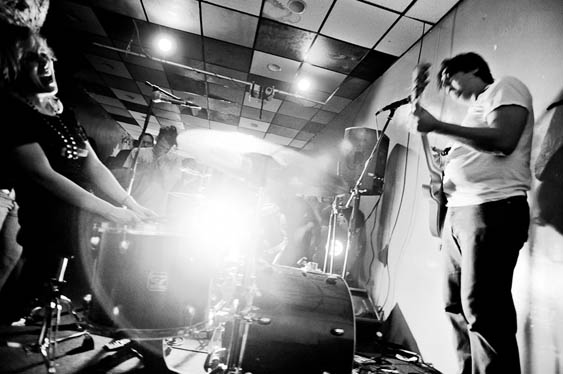

For the first time since our recent move to the Midwest, Schwervon! returns to the the East coast. After a little break from our virgin Midwestern tour, tomorrow we'll be heading back towards our old home town of NYC. Our return route will take us back through the steamy South, where we'll have a chance to revisit areas we discovered on last summer's recording adventure in Memphis, TN. The original inspiration for this tour was our friend Steven asking us to play the Beacon Riverfest. Thanks Steven. We're especially looking forward to playing in Ohio for the first time. Nan managed to line up 3 shows in Cincinnati, Toledo, and Akron. We're looking forward to seeing old friends and making some new ones. Stay tuned to ye old Schwervon! website and FB page (we're also on the G+ now) for up to date info and reports from the road. See you at the show!

June 21 - Columbia, MO - Roxy's (w/ Diggy & The Bad Decisions + We Live in Public)
June 22 - St. Louis, MO - El Lenador (w/ Dinofight + Ultraviolents + Mr. Clit and the Pink Cigarettes)�June 23 - Cincinatti, OH - Comet (w/ Homemade Drugs)
June 24 - Toledo, OH - Ottawa Tavern
June 25 - Akron, OH - Annabell's (w/ Danny Myers)
June 26 - Buffalo, NY - The Vault (w/ Jack Toft + Settlers)
June 27 - Rochester, NY - Meddlesome Lab (w/ Windsor Folk Family + Seth Faergolzia & the 23 Psaegz)
June 28 - Kingston, NY - BSP Lounge (w/ Dirty River + The Revue w/ John Burdick Group)
June 29 - Brooklyn, NY - Big Snow Buffalo Lodge (w/ Berth Control +Supercute +mc'ed by Freddie Fox &Trixie Rose)
June 30 - Beacon, NY - BEACON RIVERFEST
July 01 - Brooklyn, NY - Goodbye Blue Monday “Schwervon! Side Project Show” Major Matt Mason USA + Nan & The One Night Stands (w/ Heavy Birds + Gold)
�July 03 - Philadelphia, PA - TBA�
July 04 - Baltimore, MD - Private “BBQ” House Show (RSVP) - (w/ Silence Kid + The Degenerettes)
July 05 - Roanoke, VA - Bazaar Consignments (w/ The Bastards of Fate)
July 06 - Charlottesville, VA - Twisted Branch Tea Bazaar (w/ L’Ecole Pour Minous)
July 08 - Chapel Hill, NC - The Cave (w/ Angwish)
July 09 - Asheville, NC - The Get Down�
July 10 - Johnson City, TN - Acoustic Coffeehouse (w/ Donna Frost)
July 12 - Chattanooga, TN - JJ’s Bohemia�
July 13.- Memphis, TN - The Buccaneer (w/ The Bombay Alleys + Albatross Party)�
July 14 - Springfield, MO - The Danger Room (w/ Flawless) Read more »


{kind=link}